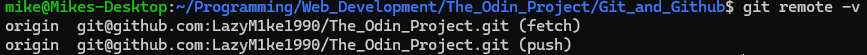

To use git with github, firstly you need to create a repository within github. To do this go to Github's homepage a click the '+' in the top right corner
followed by 'New Repository'. If the plus is not available the click your profile picture.
Give the new repository a name e.g "Git_Test" and type a brief description before finally adding a Readme File using the checkbox slider and clicking 'Create Repository'
Once the Repo has been created it now needs to be cloned. On the repo page click the green 'Code' button and press the 'SSH' tab and copy the address below it.
It has to be the 'SSH' option otherwise the address will be incorrect and will not work in the future steps. Once Copied its time to head back to the command console.
Inside the command line interface navigate to a directory you want to save your new repo into and use the 'git clone' command followed by the URL that has been copied.

The repository should be connected to the local machine now. To test to make sure, navigate to the repository folder and type the following command: 'git remote -v'

If successful, Origin fetch and push with your username and repo name should display. This is the repo URL. Origin is the name of the remote connection and it is the default name.
Origin could be named ANYTHING but at the moment it will be left as the default.
When a new file or folder is created, you can use the 'git status' command in the terminal to check if it needs 'Staging' before a commit.
If a file or folder needs 'Staging' it will be displayed in red text, if it doesnt then green.
When files and folders are red and need adding to the staging area before committing, You need to use the command 'git add filename.ext' Example of the above image is the snippet
'Git_Status_Green.png' is still red and not ready for commit. If i use the command 'git add Snippets/Git_Status_Green.png' it will add this file to the staging area and turn it green with the others.
If you have multiple files that are in need of staging you can add them all at the same time just by providing a space between each file after git add command.
One Final step would be to check the status again to make sure everything is green and ready for the 'commit'
When all files and folders are in the staging area, they are deemed ready to 'commit'(aka save). This is basically taking a snapshot of all the files/folders in the staging area in their current states.
It is important to do this when drastic changes have been made to your work which you might need to revert back from.
committing is again easy and can be done with the command 'git commit -m "commit message"'
The 'Commit Message' needs to be really descriptive to the changes that have been made incase it needs to be reverted back to a state that was 100% working.
Final step is to push all the commits to the repository using the command 'git push' If looking for confirmation you can do a final 'git status' to check everything is cleared.
Progressing on through git and github use i have found a couple extras that need mentioning. Firstly:
When adding files and folders to the staging area. Instead of adding 1 by 1, you can add everything at once by using 'git add .' or 'git add -A' just for the current working repo (Safer to use the second)
Next is publishing the repo as an actual website using github:
This can be done by navigating to the repo on github, Clicking on 'Settings' inside the repo, followed by 'Pages' on the left side bar and then change the 'branch' from 'none' to 'main'
All of this can be confirmed by clicking the 'Save' button next to this option. After a while the repo will become available using the address format 'your-github-username.github.io/your-github-repo-name'
Example below - "Your site is live at..."